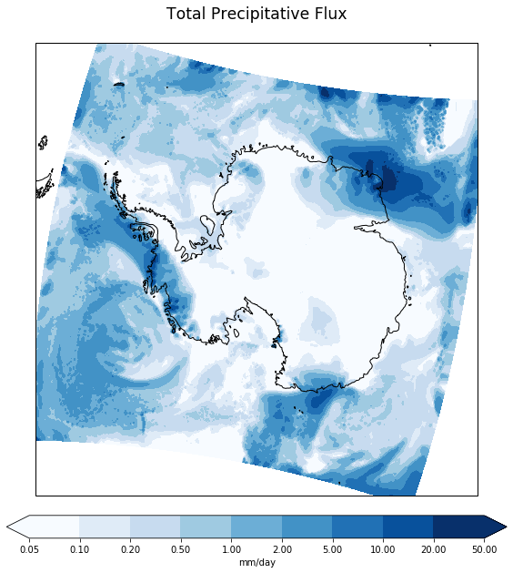
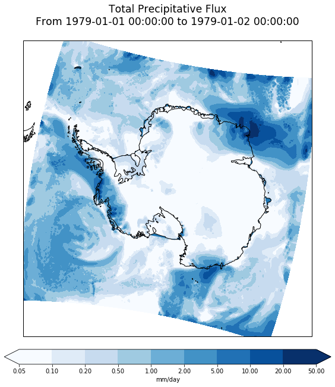

This notebook was jointly written by Scott Hosking and Tony Phillips (BAS)
import xarray as xr
import numpy as np
import matplotlib.pyplot as plt
import matplotlib.colors as colors
import cartopy.crs as ccrs
import cartopy.feature as cfe
import pyproj
import pandas as pdRead in data
ds = xr.open_dataset('~/Documents/RACMO/RACMO2.3p2_ANT27_precip_daily_1979_1980.nc')Look at dataset we have just read in
# Examine the dataset (dimensions, coordinates, data variables and global attributes)
ds<xarray.Dataset>
Dimensions: (bnds: 2, height: 1, nblock1: 40, nblock2: 400, rlat: 240, rlon: 262, time: 731)
Coordinates:
lon (rlat, rlon) float64 ...
lat (rlat, rlon) float64 ...
* rlon (rlon) float64 -32.75 -32.5 -32.25 -32.0 ... 32.0 32.25 32.5
* rlat (rlat) float64 -30.0 -29.75 -29.5 -29.25 ... 29.25 29.5 29.75
* height (height) float64 0.0
* time (time) datetime64[ns] 1979-01-01 1979-01-02 ... 1980-12-31
Dimensions without coordinates: bnds, nblock1, nblock2
Data variables:
dir (rlat, rlon) float64 ...
block1 (nblock1) int32 ...
block2 (nblock2) int32 ...
time_bnds (time, bnds) datetime64[ns] ...
dtg (time) int32 ...
date_bnds (time, bnds) int32 ...
hms_bnds (time, bnds) int32 ...
assigned (time) int32 ...
rotated_pole float32 ...
precip (time, height, rlat, rlon) float32 ...
Attributes:
Conventions: CF-1.4
source: RACMO2
Domain: ANT27
Experiment: ERAINx_RACMO2.4.1
institution: Royal Netherlands Meteorological Institute (KNMI)
CreationDate: Tue Dec 20 05:06:59 2016
comment: asim2cdf: cpar=precip, iwmo=61, ilvt=105, ilev=0, idh=24, ...
title: Total Precipitative Flux
# Look at the precipitation variable
ds.precip<xarray.DataArray 'precip' (time: 731, height: 1, rlat: 240, rlon: 262)>
[45965280 values with dtype=float32]
Coordinates:
lon (rlat, rlon) float64 ...
lat (rlat, rlon) float64 ...
* rlon (rlon) float64 -32.75 -32.5 -32.25 -32.0 ... 31.75 32.0 32.25 32.5
* rlat (rlat) float64 -30.0 -29.75 -29.5 -29.25 ... 29.0 29.25 29.5 29.75
* height (height) float64 0.0
* time (time) datetime64[ns] 1979-01-01 1979-01-02 ... 1980-12-31
Attributes:
standard_name: precipitation_flux
long_name: Total Precipitative Flux
units: kg m-2 s-1
cell_methods: time: 24-hr averaged values
grid_mapping: rotated_pole
Select precip 'Data variable' and squeeze to remove redundant height coordinate
precip = ds.precip.squeeze()
precip<xarray.DataArray 'precip' (time: 731, rlat: 240, rlon: 262)>
[45965280 values with dtype=float32]
Coordinates:
lon (rlat, rlon) float64 ...
lat (rlat, rlon) float64 ...
* rlon (rlon) float64 -32.75 -32.5 -32.25 -32.0 ... 31.75 32.0 32.25 32.5
* rlat (rlat) float64 -30.0 -29.75 -29.5 -29.25 ... 29.0 29.25 29.5 29.75
height float64 0.0
* time (time) datetime64[ns] 1979-01-01 1979-01-02 ... 1980-12-31
Attributes:
standard_name: precipitation_flux
long_name: Total Precipitative Flux
units: kg m-2 s-1
cell_methods: time: 24-hr averaged values
grid_mapping: rotated_pole
Project rotated grid onto lat-lon grid
ds.rotated_pole<xarray.DataArray 'rotated_pole' ()>
array(9.96921e+36, dtype=float32)
Attributes:
grid_mapping_name: rotated_latitude_longitude
grid_north_pole_latitude: -180.0
grid_north_pole_longitude: -170.0
proj4_params: -m 57.295779506 +proj=ob_tran +o_proj=latlon ...
proj_parameters: -m 57.295779506 +proj=ob_tran +o_proj=latlon ...
projection_name: rotated_latitude_longitude
long_name: projection details
EPSG_code:
rad2deg = 180./np.pi
p = pyproj.Proj('+ellps=WGS84 +proj=ob_tran +o_proj=latlon +o_lat_p=-180.0 +o_lon_p=-170.0 +lon_0=180.0')
rlon = ds.rlon.values
rlat = ds.rlat.values
x1,y1 = np.meshgrid(rlon, rlat)
lon, lat = p(x1, y1)
lon, lat = lon*rad2deg, lat*rad2deg # radians --> degrees# lets have a look at the data (max and min values)
np.min(precip.values), np.max(precip.values), np.min(lon), np.max(lon), np.min(lon), np.max(lon), np.min(lat), np.max(lat)(-1.8083428e-07, 0.0028139532, -179.99416710873103, 179.98894588985064, -179.99416710873103, 179.98894588985064, -90.0, -46.74917892351622)
Plot map
# select the first time from the data
data = precip.isel(time=0)
# see what it looks like (data, coordinates and attributes)
data<xarray.DataArray 'precip' (rlat: 240, rlon: 262)>
array([[6.673193e-05, 1.738828e-04, 1.959459e-04, ..., 7.532207e-05,
7.269982e-05, 6.908291e-05],
[2.103231e-04, 2.199079e-04, 2.307586e-04, ..., 8.038575e-05,
7.857729e-05, 7.541250e-05],
[1.844622e-04, 4.973246e-05, 5.136007e-05, ..., 9.132689e-05,
9.195985e-05, 9.006097e-05],
...,
[2.233440e-05, 2.025468e-05, 1.808453e-05, ..., 3.345638e-06,
3.436061e-06, 3.436061e-06],
[2.441412e-05, 2.839271e-05, 2.025468e-05, ..., 3.255216e-06,
3.255216e-06, 3.436061e-06],
[2.396200e-05, 2.269609e-05, 2.170144e-05, ..., 3.164793e-06,
3.255216e-06, 3.345638e-06]], dtype=float32)
Coordinates:
lon (rlat, rlon) float64 ...
lat (rlat, rlon) float64 ...
* rlon (rlon) float64 -32.75 -32.5 -32.25 -32.0 ... 31.75 32.0 32.25 32.5
* rlat (rlat) float64 -30.0 -29.75 -29.5 -29.25 ... 29.0 29.25 29.5 29.75
height float64 0.0
time datetime64[ns] 1979-01-01
Attributes:
standard_name: precipitation_flux
long_name: Total Precipitative Flux
units: kg m-2 s-1
cell_methods: time: 24-hr averaged values
grid_mapping: rotated_pole
plt.figure(figsize=(10,10))
ax = plt.subplot( projection=ccrs.Stereographic(central_longitude=0., central_latitude=-90.) )
ax.set_extent([-180,180,-90,-55], ccrs.PlateCarree())
# set up a Cartopy coordinate reference system for the data (rotated pole as described above)
data_crs = ccrs.RotatedPole(pole_longitude=ds.rotated_pole.grid_north_pole_longitude,
pole_latitude=ds.rotated_pole.grid_north_pole_latitude)
# set up pseudo-log contour levels and a norm that maps colour indices onto them appropriately
levels = [0.05, 0.1, 0.2, 0.5, 1, 2, 5, 10, 20, 50]
norm = colors.BoundaryNorm(boundaries=levels, ncolors=256)
# plot data (converting flux to mm/day)
result = ax.contourf(rlon, rlat, data*86400., levels, norm=norm, extend='both', cmap='Blues', transform=data_crs)
ax.coastlines(resolution='50m')
plt.colorbar(result, orientation='horizontal', label='mm/day', extend='both', fraction=0.046, pad=0.04)
ax.set_title(data.long_name+'\n', size='xx-large')
print('')
Plot deals with spatial dimensions but not time, so add time information to title
# look at the time coordinate
data.coords['time']<xarray.DataArray 'time' ()>
array('1979-01-01T00:00:00.000000000', dtype='datetime64[ns]')
Coordinates:
height float64 0.0
time datetime64[ns] 1979-01-01
Attributes:
axis: T
long_name: time
dtgstart: 1979010100
bounds: time_bnds
# time has bounds, so extract the bounds for the first time step
time_bounds = ds.time_bnds.isel(time=0)
time_bounds.valuesarray(['1979-01-01T00:00:00.000000000', '1979-01-02T00:00:00.000000000'],
dtype='datetime64[ns]')
# convert the time bounds to Python datetimes
tb_values = [pd.Timestamp(tbv).to_pydatetime() for tbv in time_bounds.values]
tb_values[datetime.datetime(1979, 1, 1, 0, 0), datetime.datetime(1979, 1, 2, 0, 0)]
# format the time bounds as "From ... to ..."
# See https://docs.python.org/3/library/datetime.html#strftime-and-strptime-behavior for format codes
time_fmt = '%Y-%m-%d %H:%M:%S'
time_bounds_str = 'From {} to {}'.format(tb_values[0].strftime(time_fmt), tb_values[1].strftime(time_fmt))
time_bounds_str'From 1979-01-01 00:00:00 to 1979-01-02 00:00:00'
plt.figure(figsize=(10,10))
ax = plt.subplot( projection=ccrs.Stereographic(central_longitude=0., central_latitude=-90.) )
ax.set_extent([-180,180,-90,-55], ccrs.PlateCarree())
# set up a Cartopy coordinate reference system for the data (rotated pole as described above)
data_crs = ccrs.RotatedPole(pole_longitude=ds.rotated_pole.grid_north_pole_longitude,
pole_latitude=ds.rotated_pole.grid_north_pole_latitude)
# set up pseudo-log contour levels and a norm that maps colour indices onto them appropriately
levels = [0.05, 0.1, 0.2, 0.5, 1, 2, 5, 10, 20, 50]
norm = colors.BoundaryNorm(boundaries=levels, ncolors=256)
# plot data (converting flux to mm/day)
result = ax.contourf(rlon, rlat, data*86400., levels, norm=norm, extend='both', cmap='Blues', transform=data_crs)
ax.coastlines(resolution='50m')
# oh, and add the ice shelves too (see available features and resolutions at https://www.naturalearthdata.com/features/)
ax.add_feature(cfe.NaturalEarthFeature('physical', 'antarctic_ice_shelves_lines', '50m', edgecolor='k'))
plt.colorbar(result, orientation='horizontal', label='mm/day', extend='both', fraction=0.046, pad=0.04)
ax.set_title(data.long_name+'\n'+time_bounds_str+'\n', size='xx-large')
print('')Make the same plot but using the true lon and lat coordinates projected into the plot's coordinate system
plt.figure(figsize=(10,10))
projection=ccrs.Stereographic(central_longitude=0., central_latitude=-90.)
plot_coords = projection.transform_points(ccrs.PlateCarree(), lon, lat)
x, y = plot_coords[:,:,0], plot_coords[:,:,1]
ax = plt.subplot(projection=projection)
ax.set_extent([-180,180,-90,-55], ccrs.PlateCarree())
# set up a Cartopy coordinate reference system for the data (rotated pole as described above)
data_crs = ccrs.RotatedPole(pole_longitude=ds.rotated_pole.grid_north_pole_longitude,
pole_latitude=ds.rotated_pole.grid_north_pole_latitude)
# set up pseudo-log contour levels and a norm that maps colour indices onto them appropriately
levels = [0.05, 0.1, 0.2, 0.5, 1, 2, 5, 10, 20, 50]
norm = colors.BoundaryNorm(boundaries=levels, ncolors=256)
# plot data (converting flux to mm/day)
result = ax.contourf(x, y, data*86400., levels, norm=norm, extend='both', cmap='Blues',
transform=projection)
ax.coastlines(resolution='50m')
# oh, and add the ice shelves too (see available features and resolutions at https://www.naturalearthdata.com/features/)
ax.add_feature(cfe.NaturalEarthFeature('physical', 'antarctic_ice_shelves_lines', '50m', edgecolor='k'))
plt.colorbar(result, orientation='horizontal', label='mm/day', extend='both', fraction=0.046, pad=0.04)
ax.set_title(data.long_name+'\n'+time_bounds_str+'\n', size='xx-large')
print('')